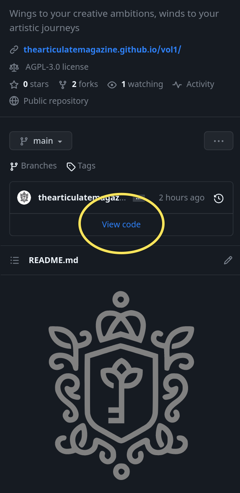

Introduction
We will build this up little by little.
Terms you need to know
#todo
- Hugo: Hugo is a static site generator. In simple terms, it is a software that can take a text file and convert it into a website you can serve to your users over internet.
- Git: Git is a version control system(VCS), and is currently the most popular VCS in the world. In simple terms, it allows you to save the current state of files in a folder. If you modify multiple files in that folder, and later decide to restore the state of that folder before any modification, git will allow you to do that. Git will allow you to create near infinite number of such restore points.
Despite being integral part of the process of building and pushing the magazine website online, the editors of magazine is not expected to have any knowledge of git or hugo.
Creating and managing markdown files
- There are several softwares available for markdown file management across platforms. At the time of writing, the following ones are worthy of mention
- markor: Android
- obsidian: Android, Linux, Mac, Windows
- Visual Studio Code/Vscodium: Linux, Mac, Windows
General Structure of markdown file in hugo
In hugo, markdown file has two parts
Uploading new file
- Go to github.com and sign in.
- Open the repo
thearticulatemagazine/vol1or whichever volume is the latest at the time. - In desktop, the repo will open to a page with all the relevant files. In mobile view, you may have to click on the
View Codelink to view the files.

- Open the appropriate folder. From the overflow menu in the upper right corner, select
Upload files

- Select the files from your desktop/mobile.
Adding content
Is it from a new contributor? Add a new author file first.
Depending on type of content, refer to appropriate instructions below.
- Interns column
- Poem
- Article
- Event
- Interview
- Book Review
- Movie Review
- Video
- Photography
Adding a new author
- Create a new markdown file with the following content, replacing relevant parts as necessary
---
title: "Sachin Tendulkar"
biosmall: "A phenomenon with a willow"
biolarge:
avatar: https://link/to/image
multiple: false
---
- Upload it to
content/authors
Points to remember
- The file name should follow the pattern
prefix-hypenated-name-in-small-case.md.- Prefix of UG students will be
ug-batch-year. eg: ug-2018 - Prefix of PG Residents will be
pg-dept-batch-year. eg: pg-psm-2020 - Prefix of anonymous contributors will be
anon - Prefix of any other staff/nursing students should reflect their department, batch year etc. eg:
nursing-2020 - Prefix of contributors from outside campus may be decided by respective chief editors.
- Some prefixes is set aside for special authors. eg: 00-edboard, 01-batch-2018 etc
- Prefix of UG students will be
| Correct | Wrong |
|---|---|
| ug-2020-sachin-tendulkar.md | ug-2020-Sachin Tendulkar.md |
| ug-2020-Sachin-Tendulkar | |
| UG-2020 Sachin Tendulkar.md |
-
The file names you set becomes part of URL. In the above example, the URL for the author page of Sachin Tendulkar will be
https://thearticulatemagazine.github.io/authors/ug-2020-sachin-tendulkar/ -
If there are more than one contributions from the same person, the
multiplefield should be set totrue. This is the switch that decides whether theSee more works from xxxxappears below their works.

-
biolargefield is not mandatory. If there is content in it, it will appear in the author page, instead onbiosmall. -
Blank lines should be strictly avoided.
Adding a new interns column
- Create a new markdown file with the following content, replacing relevant parts as necessary
---
title: "Ricky Ponting"
authid: 01-batch-2018
img: https://link/to/image
tags: []
date: 2023-07-20T05:45:38+05:30
aka: "Punter"
---
Rest of the content..
Points to remember
- The date will decide the order of appearance of any work in the Home page and other listing pages of the magazine. Manipulate it as necessary, without deviating from the format.
- The
akafield will correspond to nickname shown under their name in the index page of Intern's column. It is not mandatory.
Dev Notes
Notes for those who intend to modify the code or is generally curious.
Points to remember
- Do not mess up. Go ahead if you know what you are doing. You do not want to be the person responsible for magazine site going down. Nobody is coming to save you. Read it again. Now read it two more times.
Development setup
You should have installed the following in your system.
- hugo
- nodejs
- npm
- git
Clone the repo.
git clone https://github.com/thearticulatemagazine/vol1.git thearticulatemagazine
Install the npm dependencies and run hugo and tailwind servers with watch flag set. (Fair warning: Might be taxing on the system if you run couple of more electron apps.)
Read package.json for other scripts.
Husky is in place for pre-commit hook of prettier. So you do not have to set format on save.